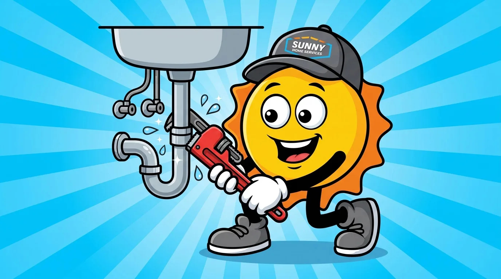
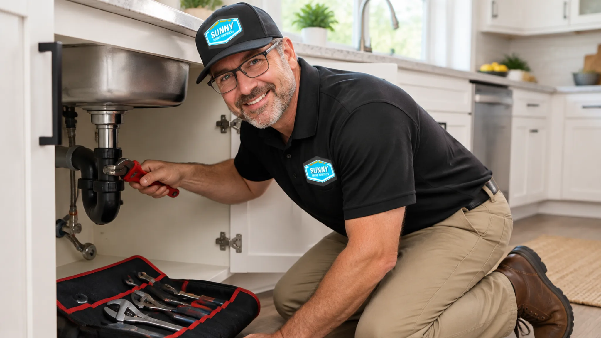

385.853.8116

Same-day response. Upfront pricing. Licensed plumbers.

Most plumbers near South Jordan are either part of big national chains that treat customers like numbers or small, friendly shops that aren’t easy to reach when your pipe bursts on a weekend. Sunny Home Services provides the speed and technology of a large company with the honesty and care of a local one.
From South Jordan’s Daybreak villages to the older streets east of Bangerter Highway, we put more than 30 years of combined experience behind every service call.

We handle the full range of plumbing services near South Jordan. No guesswork or high-pressure sales, just solutions.
We clear slow sinks, gurgling tubs, and recurring clogs at the source. The approach depends on where the blockage is and what’s causing it.
We do water heater repair, maintenance, and replacement for tank models, including units affected by mineral buildup. Regular maintenance can help control sediment and extend equipment life.
We install and service tankless systems that are sized to your household’s usage. We also service existing units to address scale buildup and performance problems.
We pinpoint hidden leaks behind walls, under slabs, and inside the pipes. Finding the source early can help limit water damage and unnecessary disruption.
We use hydro jetting to scour grease and roots from main lines. This high-pressure flush can clear buildup when basic snaking won’t cut it.
We install whole-home water filtration to reduce scale and chlorine. The system treats the water before it reaches your fixtures.
We fix or replace leaky or broken faucets, toilets, fixtures, and garbage disposals. Repairs can also address worn valves and seals that waste water.
We run a camera down the line to pinpoint the problem. The view inside the pipe shows us the location and extent of the issue.
We replace certain failed sewer lines without trenching your whole yard. This can preserve your landscaping and reduce cleanup.
We offer 24-hour plumber service for emergencies that can’t wait until morning. If water is spreading right now and your home or health is at risk, call our emergency team anytime.
Call an emergency plumber when you can’t stop the water from spreading. A burst pipe, a sewage backup, a water heater dumping its tank, or no water at all are emergencies. When you reach a 24-hour plumber at Sunny Home Services, we’ll talk you through shutting off the water while we’re on the way.
Usually, a dripping faucet or a single slow drain can wait for a same-day or next-day visit.
Before our plumber arrives, shut off the water. For most emergencies, that means turning off the valve behind the fixture or, for a bigger leak, the main shutoff where the line enters your home.
Then clear the area. Move anything valuable out of standing water, and if a drain is backing up, stop running water. A few minutes of prep can be the difference between a quicker fix and an insurance claim.
Sunny Home Services sends licensed and certified plumbers to South Jordan to do the work safely and in accordance with Utah code.
When you’re looking for a local, licensed plumber in South Jordan, the right credentials are only part of the picture. You should also know who’s coming into your home, what the work will cost, and why it’s recommended. With Sunny, you’ll get a heads-up text and technician bio before we arrive, plus a flat-rate price to approve before work starts. Our dependable team handles work, including gas lines and water heaters, and pulls permits when it’s needed.
Our team members are background-checked, drug-tested, uniformed, and trained to explain the job in plain language. Every job is documented, and our work is backed by a satisfaction guarantee. That’s the standard we’d expect from any plumber working in our own homes.

Most plumbing troubles in South Jordan trace back to the home’s age or to minerals in the water. Here’s what we see most:
A single leaky toilet can waste up to 200 gallons of water a day.
Left alone, these issues can lead to more expensive emergency calls we’d like to help you avoid.
South Jordan’s hard water comes from the Jordan Valley Water Conservancy District. Minerals build up inside water heaters and fixtures, so they work harder and wear out sooner.
Housing matters, too. In Daybreak and other post-2005 communities, most homes sit on concrete slabs, with a supply line running under the foundation, so a leak can go undetected before it’s discovered. The homes east of Bangerter often have older fixtures and original piping that has issues.
Financing is available for larger work, such as a water heater or sewer repair, and we’ll walk you through the process without pressure. It’s worth checking our current specials and the Sunny Family plan before you book.

When you need a licensed plumber in South Jordan, just contact us, and we’ll get you scheduled. We also cover neighboring communities in our service area, so if you’re just past the South Jordan line, we’re close by.